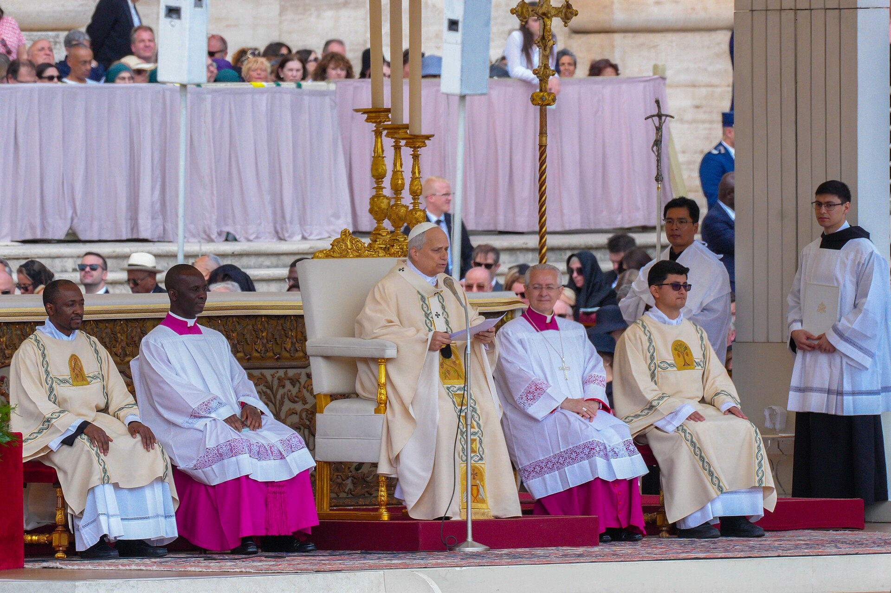
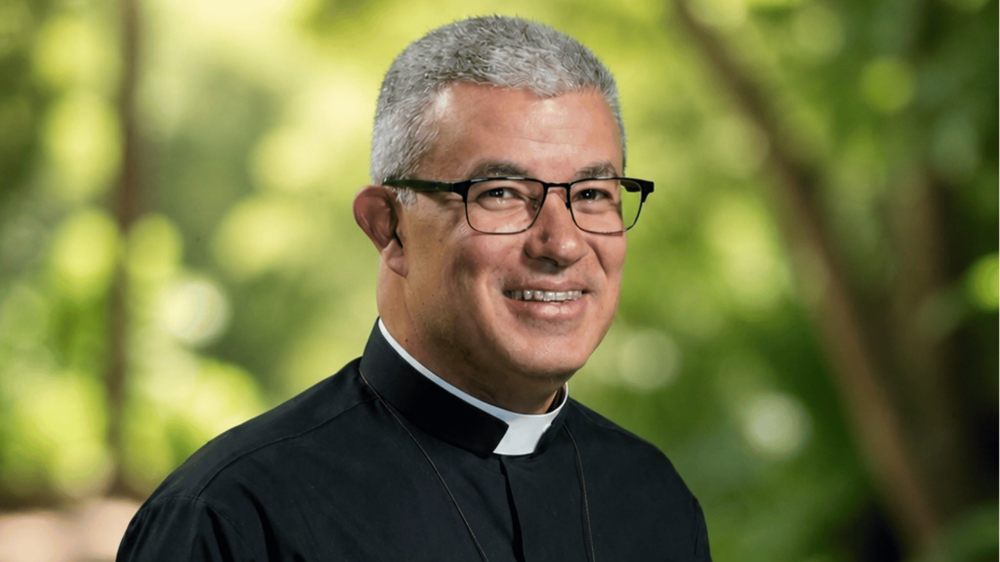

Bem-vindo ao jornal de Terra de S. Cruz, onde você encontrará as últimas notícias e análises sobre os acontecimentos mais relevantes do momento. Nosso jornal é dedicado a fornecer informações precisas e imparciais para manter nossos leitores informados sobre os eventos locais, nacionais e internacionais.
Saiba onde assistir ao novo documentário sobre o Papa Leão XIV [...]

Pe. Roger Luís da Silva foi eleito como novo presidente da Comunidade Canção Nova, assumindo o cargo após um período de transição [...]

Padre Roger Luís / Foto: Comunicação Institucional Canção Nova
Marco Rubio fará uma visita ao Papa, no Vaticano, após dilemas entre o sumo pontífice e Trump [...]
Prefeito Eduardo Pimentel com a primeira-dama Paula Mocellin, na audiência com o Papa Leão XIV. Vaticano, 21/01/2026. Foto: Simone Risoluti/Vatican
© 2026 Terra de S. Cruz